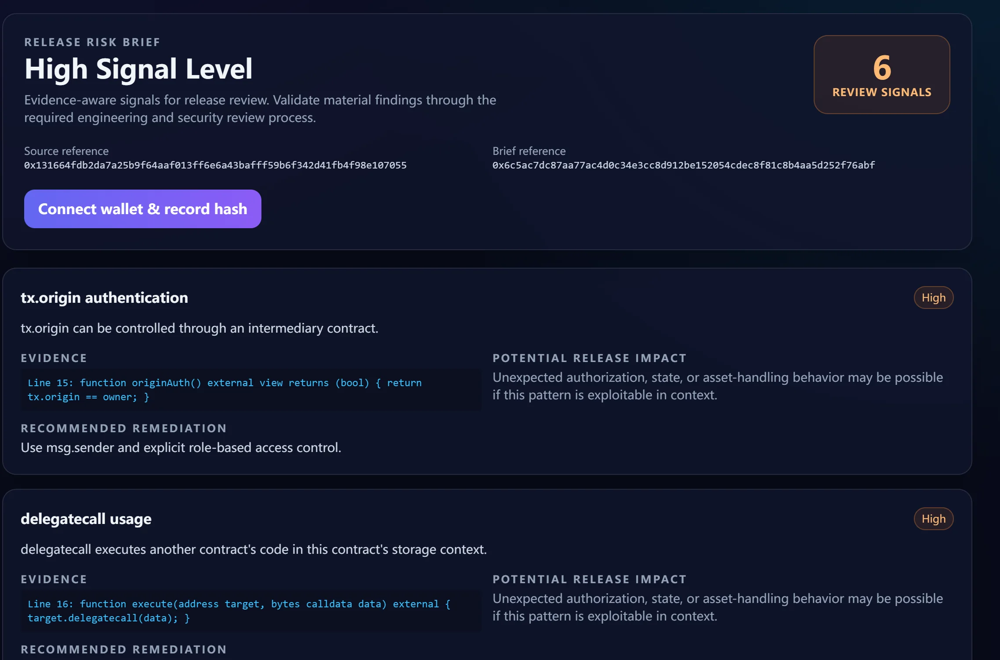
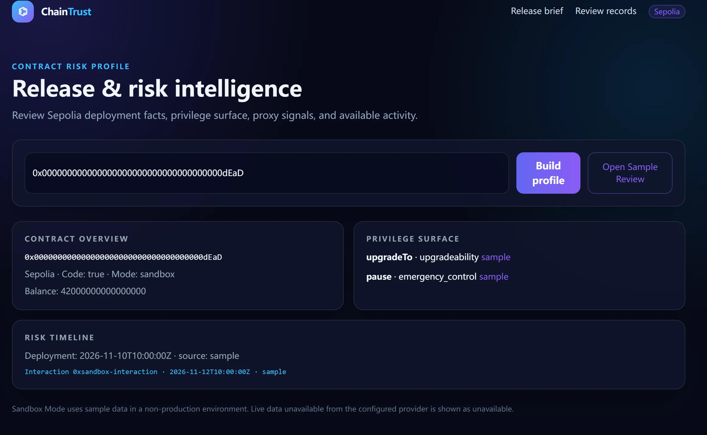
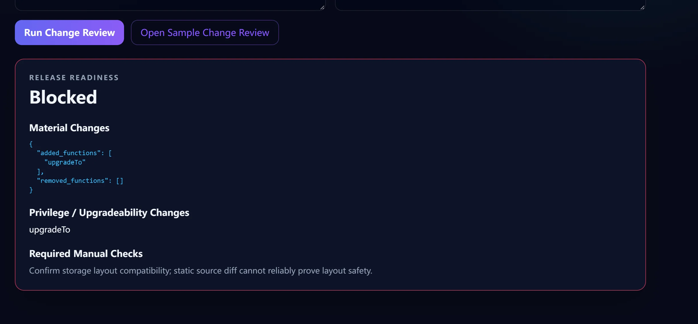
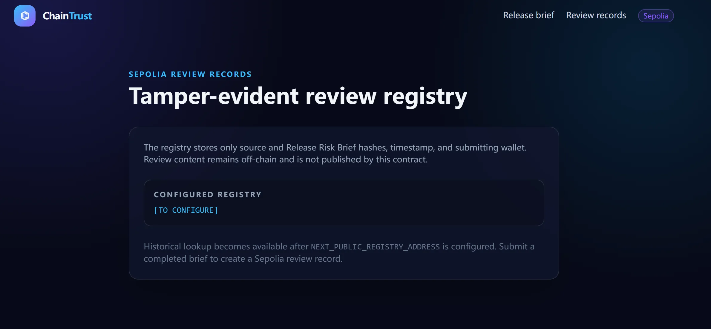

Background and goal
Smart-contract release reviews often scatter source findings, privilege assumptions, proxy configuration, change evidence, and approval records across different tools. ChainTrust brings those signals into one review workflow. Its goal is decision support, not autonomous security certification.
My responsibilities
Independently delivered
- Defined the product scope, review workflow, data model, and human-review boundary.
- Designed the Next.js, FastAPI, PostgreSQL, Solidity, and ethers.js architecture.
- Implemented deterministic Solidity signals, structured AI briefs, change review, and contract profiles.
- Built wallet connectivity and the Sepolia AnalysisRegistry hash-registration flow.
- Documented local setup, fallback behaviour, security limitations, and public release.
Deliberately excluded
- No claim of replacing a professional smart-contract audit.
- No private keys, RPC secrets, API keys, or plaintext reports stored on-chain.
- No automatic deployment approval or transaction execution.
- Sandbox data is explicitly labelled when a live provider is unavailable.
Technology stack
Core capabilities
- Source review: detects signals including
tx.origin,delegatecall, unchecked low-level calls, privileged entry points, and proxy upgrade patterns. - Evidence-backed brief: produces severity, code evidence, potential impact, remediation guidance, limitations, and deterministic fallback output.
- Contract profile: summarises deployment facts, privilege surface, proxy signals, and available activity from a Sepolia address.
- Change review: compares candidate and baseline source or bytecode, highlights material and privileged changes, and requires manual checks when evidence is insufficient.
- Review registry: records source and brief hashes, timestamp, and submitting wallet without publishing review content.
System architecture
Deterministic rules establish reproducible evidence; the model organises bounded review guidance; the chain stores only tamper-evident references.
Technical challenges and solutions
AI output needed a verifiable boundary
I used a structured contract, explicit evidence fields, deterministic signals, and a fallback path so the workflow remains inspectable even without a model API key.
Proxy and privilege risk is contextual
The system separates detected signals from conclusions, surfaces EIP-1967 and privileged functions, and marks manual checks when static evidence cannot prove safety.
On-chain transparency can expose sensitive content
The registry stores only source and brief hashes with submission metadata. Source code and review text remain off-chain.
Release comparison must preserve material changes
The change-review flow reports added and removed functions, privileged and upgradeability changes, and a blocked status when required checks are unresolved.
Product evidence



